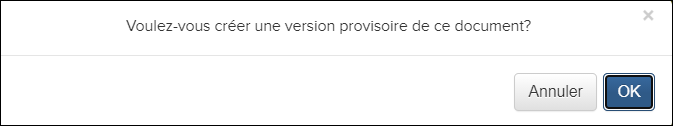
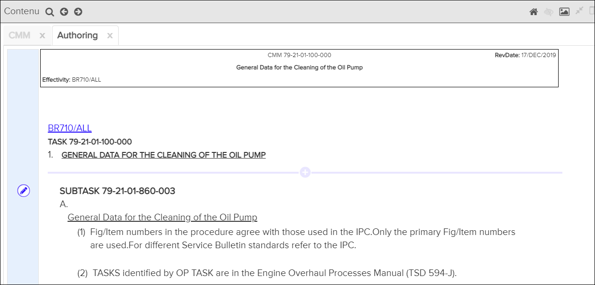

Mode de création
Non applicable pour Pinpoint Standalone Light.
Si vous disposez des autorisations appropriées, vous pouvez voir et
sélectionner l'icône  Allumer authoring mode dans l'en-tête du volet
Contenu. Cette fonctionnalité vous permet d'ajouter un nouveau
contenu et de modifier le contenu existant d'un document. Faire référence à Ajouter une nouvelle section and Modifier la section.
Allumer authoring mode dans l'en-tête du volet
Contenu. Cette fonctionnalité vous permet d'ajouter un nouveau
contenu et de modifier le contenu existant d'un document. Faire référence à Ajouter une nouvelle section and Modifier la section.
- Dans le volet Librairie, sélectionnez une bibliothèque, puis sélectionnez une publication.
- Dans le volet Table de Matières, sélectionnez un document.
Le document s'ouvre dans le volet Contentu.
- Dans l'en-tête du volet Contenu, cliquez sur l'icône
 Allumer authoring mode. Un message apparaît pour confirmer que vous
souhaitez créer un brouillon. Par example:
Allumer authoring mode. Un message apparaît pour confirmer que vous
souhaitez créer un brouillon. Par example:
- Cliquez sur le bouton OK pour créer le brouillon.L'onglet Authoring apparaît.

Volet Contenu - Onglet Authoring
- Les fonctionnalités attachements, annotations, et de références intégrées est désactivée lorsque vous êtes en mode création.
- Le contenu que vous créez est verrouillé pour empêcher d'autres utilisateurs de créer le contenu.
Icône du mode de création - Indicateurs d'état
- : Le document est disponible pour la création.
 : Le document est en cours d'élaboration et
extrait par l'auteur actuel.
: Le document est en cours d'élaboration et
extrait par l'auteur actuel.- : Le document est en cours et extrait par un autre auteur.
 : Le document est en cours de révision et
l'utilisateur actuel est autorisé à le réviser.
: Le document est en cours de révision et
l'utilisateur actuel est autorisé à le réviser. : Le document est en cours de révision et l'utilisateur actuel
ne dispose pas des autorisations nécessaires pour le réviser.
: Le document est en cours de révision et l'utilisateur actuel
ne dispose pas des autorisations nécessaires pour le réviser.
Vous pouvez survoler l'icône du mode de création lorsque l'état du document est "In
Progress" ou "In Review" pour afficher l'état actuel, le propriétaire et les dates de
création / mise à jour. Par example: